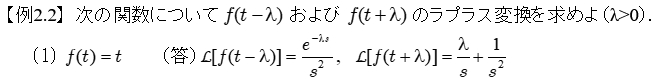
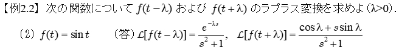

| (%i1) |
/*記号の並びのために，あえて宣言する．*/ declare(λ, constant); /*λを定数として宣言*/ |
| (%i2) |
/*出典の設問では設定されていないが，Maximaにおいて，解を一意的に求めるために λ>0の条件を付ける．*/ assume(λ>0); /*記号の仮定*/ |
| (%i3) | f(t):= t; /*関数の定義*/ |
| --> |
/*【非常に重要な点】 f(t-λ)のラプラス変換においては，0≦t≦λにおいて，f(t)=0としなければならないので， f(t-λ)のラプラス変換を求める際は，f(t-λ)に 単位ステップ関数 unit_step(t) (t≦0で0, 0＜tで1) を掛けなければならない．*/; |
| (%i4) |
/*関数f(t-λ)のラプラス変換 */ LT1: laplace(f(t−λ)·unit_step(t−λ), t, s); |
| --> | /*-----上式が設問(1)のf(t-λ)のラプラス変換の結果-----*/ |
| (%i5) |
/*関数f(t+λ)のラプラス変換*/ LT2: laplace(f(t+λ), t, s); |
| --> | /*-----上式が設問(1)のf(t+λ)のラプラス変換の結果-----*/; |

| (%i6) | f(t):= sin(t); /*関数の定義*/ |
| (%i7) |
/*関数f(t-λ)のラプラス変換*/ LT3: laplace(f(t−λ)·unit_step(t−λ), t, s); |
| --> | /*-----上式が設問(2)のf(t-λ)のラプラス変換の結果-----*/; |
| (%i8) |
/*関数f(t+λ)のラプラス変換*/ LT4: laplace(f(t+λ), t, s); |
| --> | /*-----上式が設問(2)のf(t+λ)のラプラス変換の結果-----*/; |
Created with wxMaxima.